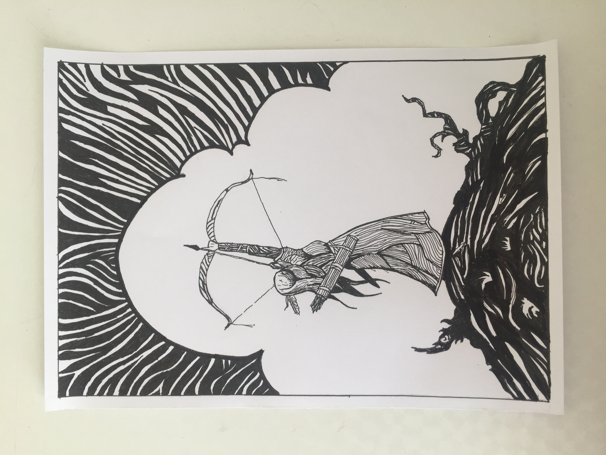
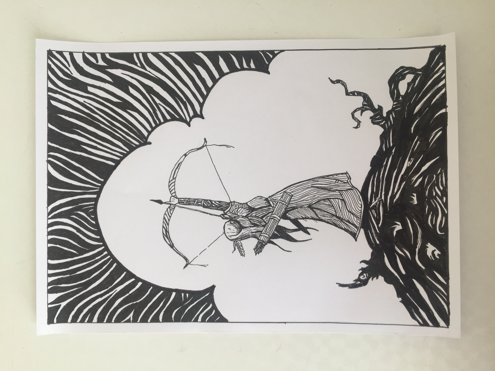
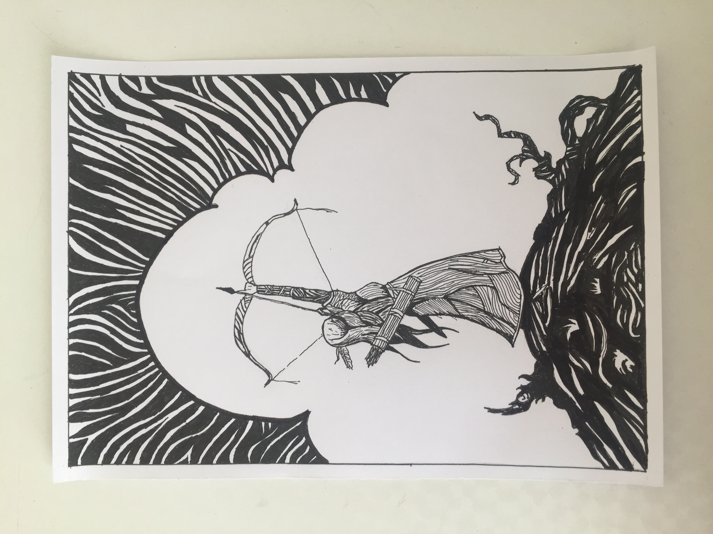

 Merhaba ben Ayfer. Yakında 23 yaşına girmiş bulunacağım. Bilgisayar Mühendisliği sınıf öğrencisiyim. Yaklaşık bir buçuk yıllık pandemiden sonra tekrar okullar açıldı. Bu dönem ne yazık ki çok yorucu geçiyor. Okul ile birlikte bilim, teknoloji, mühendislik alanında çalışmalar yapan bir derneğe üyeyim. Derneğimizin adı Gençstem. Aynı zamanda okulda da kulübümüz bulunmaktadır. Kaldığım yer okula çok uzak. Yaklaşık iki buçuk üç saatim yollarda geçiyor. Tüm bunlar arasında kendimi geliştirmeye çalışıyorum. Tasarıma ilgim olduğundan ve yazılımın bir alanını çok iyi bir şekilde öğrenmek için web tasarım alanından başladım. O yüzden bu ödevi yapmaktayım. Şu ana kadar çok eğlenceli geçiyor. Umarım başarılı şekilde bitirebilirim bu patikayı. Teşekkürler.
Şu ana kadar okuduğum en güzel kitap Kitap Hırsızı 'dır.
İlkokuldan beri hiçbir eğitim almadan kendi çabalarımla resim çiziyorum. Birkaç tanesini sizle paylaşayım aşağıda.

En sevdiğim dizi açık ara Friends 'dir. Film ise Inception.
En sevdiğim şarkıcı Halsey ve en sevdiğim şarkısı da Colors.
Boş olduğum her an sudoku çözmeye çalışırım. Beyin gelişimi ve hafıza açısından oldukça yararlıdır.